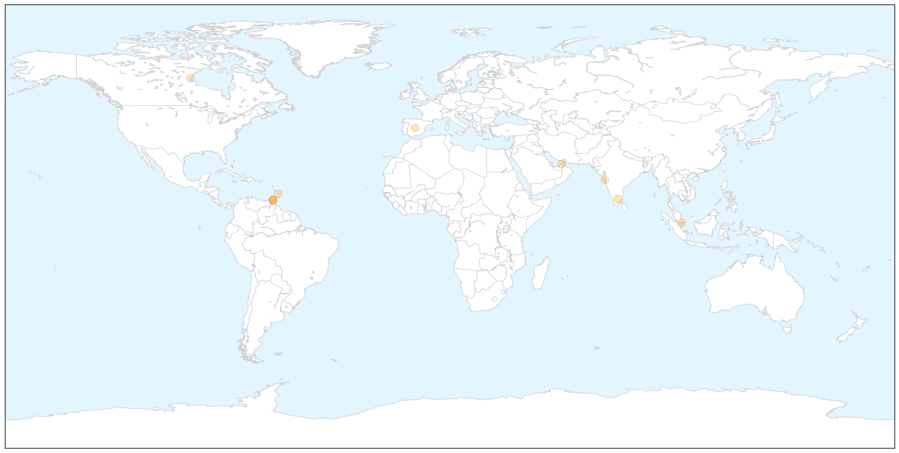

Swine Flu
30-Day Web Trend
4 alerts, 0 warnings

30-Day Twitter Trend
0 alerts, 0 warnings

Article Locations

X

Article Confidences

Top Articles:
- 0.941
- Corporation on alert after suspected swine flu death
- 0.821
- Trinidad and Tobago News, Blogs, Videos, Forums and More!
- 0.821
- Trinidad and Tobago News, Blogs, Videos, Forums and More!
- 0.821
- Trinidad and Tobago News, Blogs, Videos, Forums and More!
- 0.821
- Trinidad and Tobago News, Blogs, Videos, Forums and More!
- 0.821
- Trinidad and Tobago News, Blogs, Videos, Forums and More!
- 0.821
- Trinidad and Tobago News, Blogs, Videos, Forums and More!
- 0.821
- Trinidad and Tobago News, Blogs, Videos, Forums and More!
- 0.821
- Trinidad and Tobago News, Blogs, Videos, Forums and More!
- 0.816
- 16th lepto death in 12 days, H1N1 claims a life too
Top Tweets:
-
No tweets found for Jul 12, 2015
West Nile Virus
30-Day Web Trend
3 alerts, 0 warnings

30-Day Twitter Trend
0 alerts, 0 warnings

Article Locations

Article Confidences

Top Articles:
- 0.992
- West Nile virus detected in Will County
- 0.990
- More cases of West Nile Virus have been detected in Illinois
- 0.965
- Watch Out For Mosquitoes This Summer
- 0.964
- This year, West Nile case has been first reported by Washington
- 0.937
- Mosquito test positive for West Nile in areas of Ohio
- 0.933
- Amid rainy summer, Ohio urges precautions against mosquitoes
- 0.927
- Montana's First Case Of The Year
- 0.923
- “The Courier ” Amid rainy summer, Ohio urges precautions against mosquitoes
- 0.910
- West Nile Virus On Rise In Bay Area, Present In Solano...
- 0.887
- Youngstown News, Amid rainy summer, Ohio urges caution with mosquitoes
- 0.871
- The Courier Amid rainy summer, Ohio urges precautions against mosquitoes
- 0.741
- Monsoons could bring more mosquitoes
- 0.598
- Health department provides tips to avoid West Nile
Top Tweets:
-
No tweets found for Jul 12, 2015